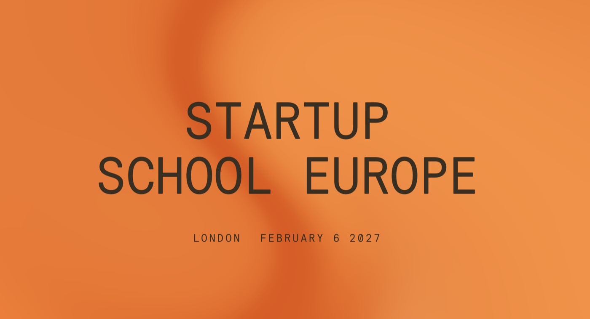
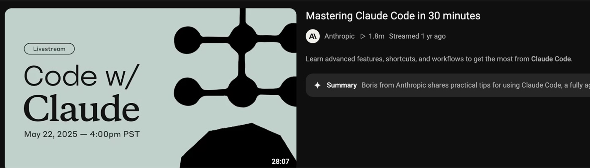
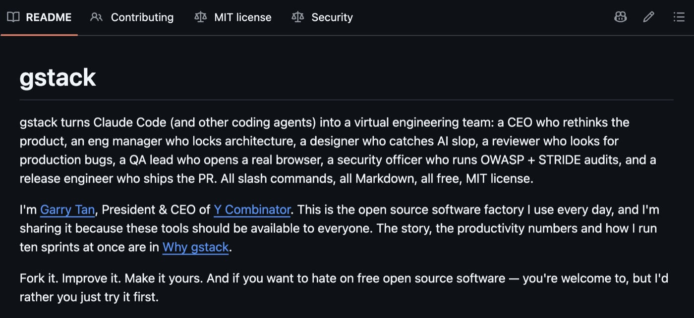
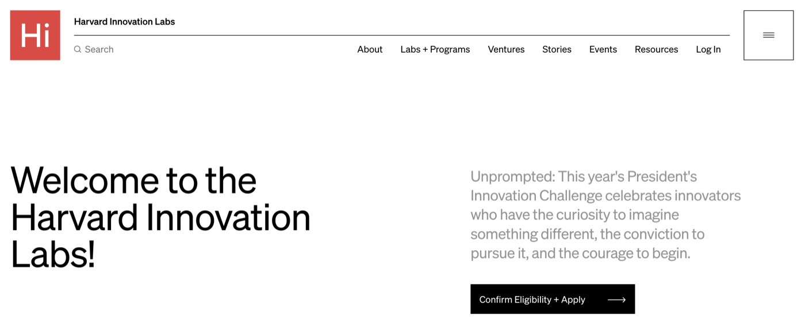
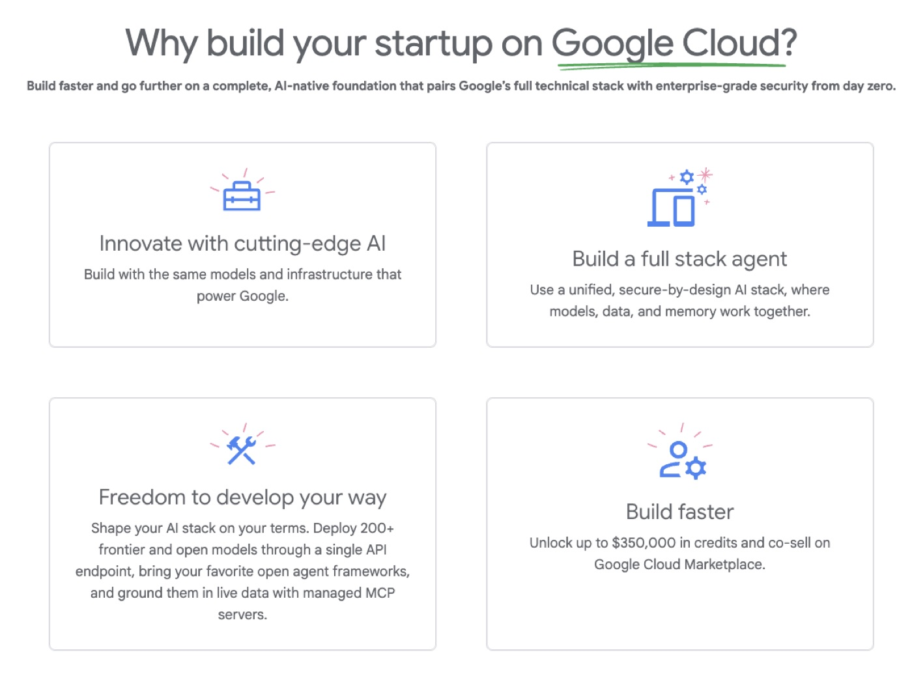
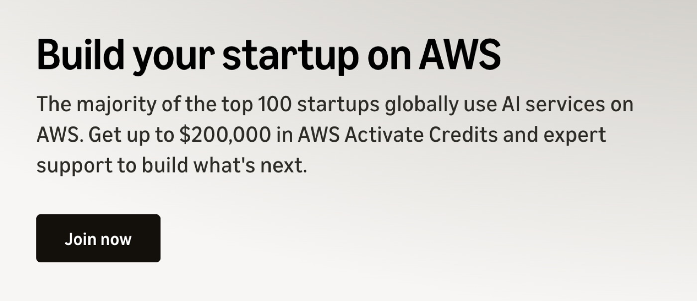

5 free things for your startup
From YC, Anthropic and Harvard. Plus free cloud credits and some extra reading.
Get in a room with YC at Startup School. Learn Claude Code from the person who built it, then give it a whole engineering team with gstack. Learn the fundamentals from Harvard's i-lab. Then claim your cloud credits before you pay for a single server. It's all free. Startup School and the credits need an application, and the rest you can start today.
1. Startup School Europe
Y Combinator · London, 6 February 2027

A day of talks and sessions with YC partners. Paul Graham and Garry Tan are on the speaker list. You don't need a startup yet. Spots are limited, so request one early.
2. Mastering Claude Code in 30 minutes
Boris Cherny · Anthropic

The person who created Claude Code shows the shortcuts and workflows he uses. Watch it before you build your MVP.
3. gstack
Garry Tan · President & CEO of YC

His open source Claude Code setup. It turns one agent into a team: CEO, eng manager, designer, reviewer, QA and release engineer. All slash commands, MIT licence.
4. Startup Secrets
Michael Skok · Harvard Innovation Labs

The i-lab's lecture series on building a startup, from the perfect pitch to competitive advantage.
5. Free cloud credits
Google for Startups · AWS Activate


Google Cloud gives startups up to $350,000 in credits. AWS Activate gives up to $200,000. Apply before you pay for a single server.
Google for Startups → AWS Activate →
Extras
Free courses and reading if you want to go deeper.
- MIT 15.390: New Enterprises. MIT Sloan's startup course by Bill Aulet, free on OpenCourseWare. You go from a market opportunity to a full business plan.
- How to Start a Startup (Stanford CS183B). Sam Altman's 2014 Stanford class, with lectures from Peter Thiel, Paul Graham and more.
- How to Get Startup Ideas, Paul Graham. On noticing problems instead of brainstorming them.
- Do Things That Don't Scale, Paul Graham. How the early days of a startup actually look.
- YC Co-Founder Matching. YC's free platform for finding a co-founder.